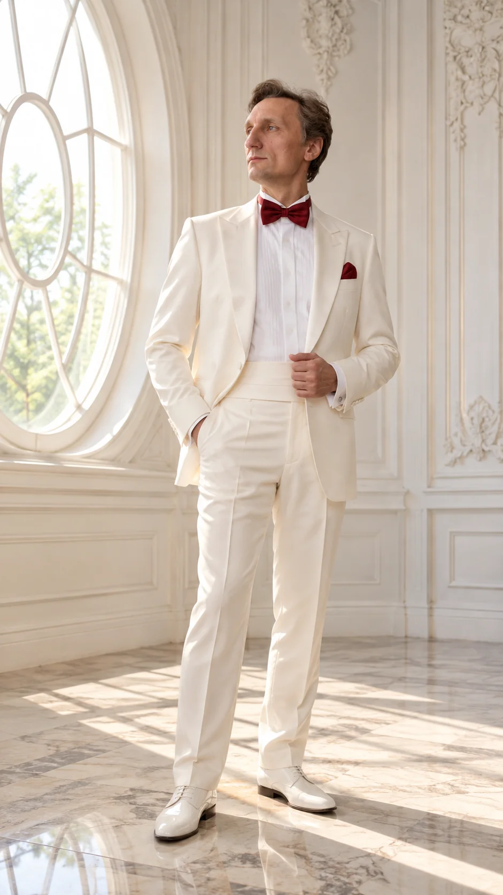

Биография
Творческий путь, образование и концертная деятельность.

Лев Красовицкий
Лев Станиславович Красовицкий — российский тенор, исполнитель оперных арий, романсов и концертных программ.
В 1997 году окончил Академическое музыкальное училище при Московской государственной консерватории имени П. И. Чайковского по специальности «сольное пение». В 2015 году получил образование в РГСУ по направлению «сольное пение, педагог».
С 1997 по 2005 год — солист ансамбля «Мадригал» (Московская филармония). Работал в хоре Большого театра и Музыкального театра имени К. С. Станиславского и Вл. И. Немировича-Данченко. С 2001 по 2014 год — солист оперы Московского государственного академического детского музыкального театра имени Н. И. Сац.
Участвовал в гастрольных выступлениях в Европе, США и Великобритании. Среди упомянутых в творческом резюме площадок — Concertgebouw (Амстердам), Carnegie Hall (Нью-Йорк), Большой театр России и концертные залы Московской консерватории.
Опыт и проекты
Ансамбль «Мадригал»
Солист ансамбля Московской филармонии.
Театр имени Н. Сац
Солист оперы.
«Борис Годунов»
Гастрольные туры постановки режиссёра Деклана Доннеллана в США и Великобритании; участие как поющего драматического актёра.
Хоровые гастрольные проекты
Участие в Don Kazaken Choir и Хоре Донского монастыря, гастроли по Европе.
Концертная деятельность
По предоставленному резюме — солист ансамбля народной русской песни «Метелица» и академического хора «Осанна».
Информация на странице подготовлена по предоставленному артистом резюме; актуальные выступления следует уточнять.
«Борис Годунов»
Лев Красовицкий указан среди исполнителей знаменитой постановки Деклана Доннеллана, впервые представленной в Москве в 2000 году. Спектакль гастролировал в Европе, Северной и Латинской Америке.
Архив постановки ↗